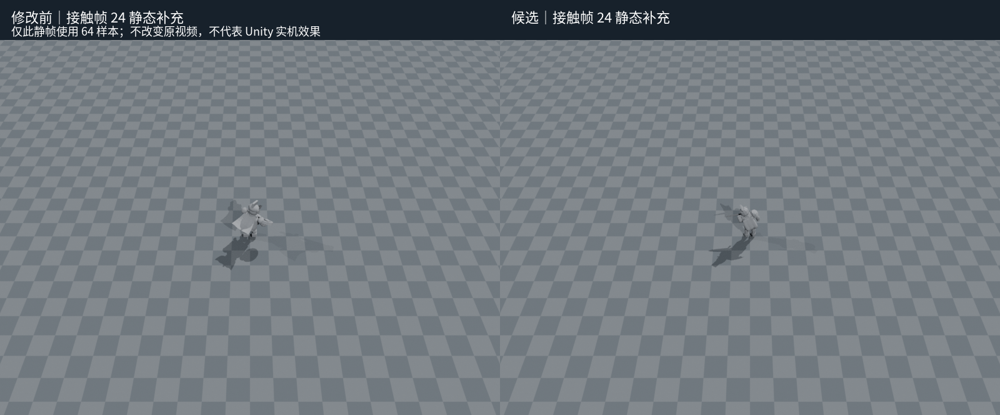
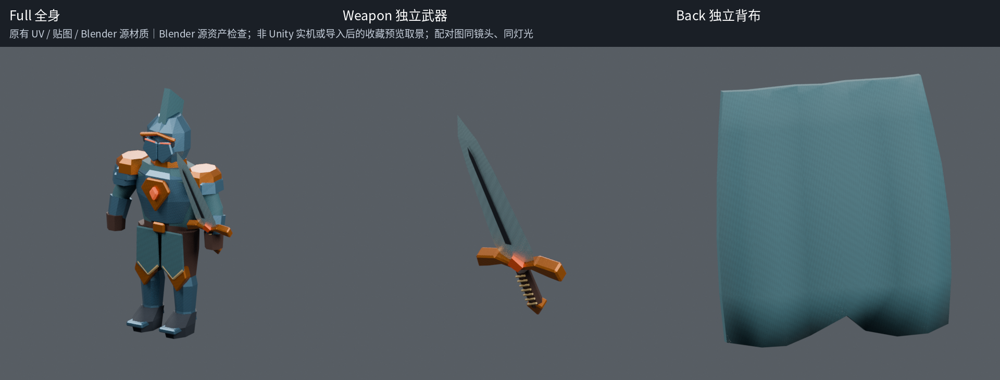
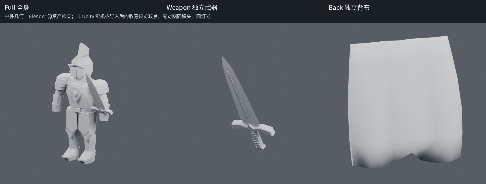
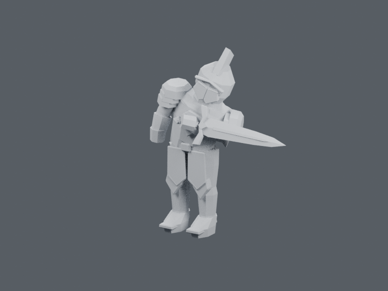
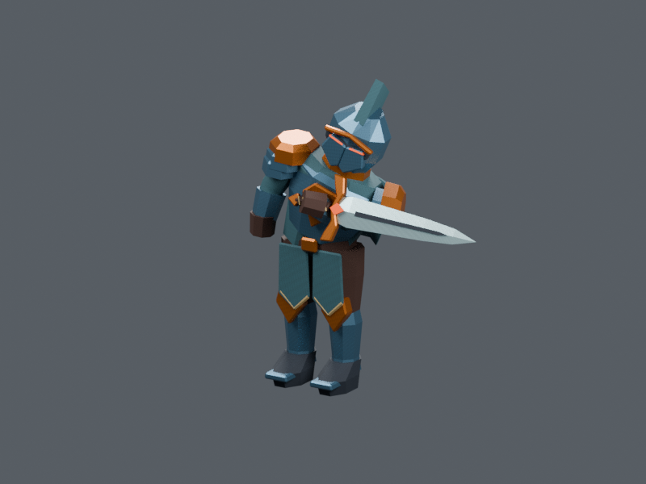
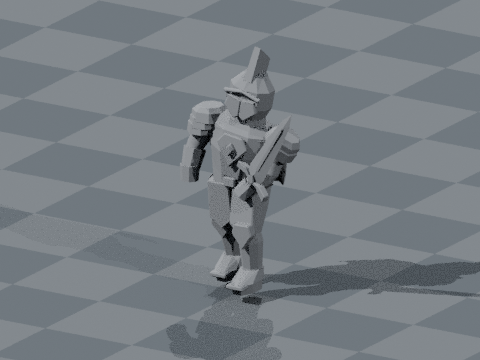
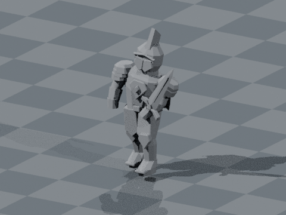

星烬纪元 · 移动普攻视觉复核
同一套初始装备、固定前向移动、相同摄影机与灯光。左侧为原有程序化回退，右侧为分层骨骼候选。重点观察普攻期间模型轮廓和腿部步态能否延续。
这是 Blender 原生渲染的源码重建，不是 Unity 实机录像。候选默认关闭；此片段不验证转向、伤害、真实碰撞、手机性能或脚底防滑。上半身再次攻击时仍直接跳到接触帧。
主对比：6 秒 / 24 fps。每侧原生 800×600；字幕位于画面之外。视频为低采样渲染，噪点仍可见。
下载对比 MP4 · 完整证据说明 · 测试与边界 · 当前源码与录制输入等价核对
独立的清晰接触静帧

同一接触帧以 64 samples 单独重渲染；不代表上方视频也使用了 64 samples。
原始影片
基线 · 按游戏默认镜头参数重建候选 · 相同镜头参数基线 · 近景运动诊断候选 · 近景运动诊断
现有源材质检查
原有 UV 与打包贴图，未改造材质或几何。以下配对使用相同镜头、姿态和灯光，仅切换中性材质与原生源材质。独立武器与背布采用源资产检查取景，不是游戏收藏预览截图。

原有材质：钢蓝、黄铜及布料分区可见；角面盔甲、块状手部和较硬的背布外形仍保留。
查看相同几何的中性材质与接触帧配对


接触帧 · 中性材质
接触帧 · 原有材质源材质、Unity 参数及复现说明 · 实际 Unity 预览待验收步骤
保留的 FBX 子帧精度失败
原有 240 个整数帧往返检查通过；新增 0.1 毫米子帧门槛仍为 FAIL。分层最大约 0.672 毫米，原有未分层 Basic 对照最大约 0.817 毫米。对照定位了已有插值误差，但没有把失败改判为通过。
查看分层误差峰值的源文件 / FBX 对照

源文件姿态
重导入 FBX 姿态完整误差分布 · 精确采样状态
冻结 Windows 候选：dcd75ac8a96806788868696f05cffcf4a4d583f4。素材和采样配方与录制版本逐字节核对；复用仅限固定朝向及停走输入。打开本文件即可离线查看，保留同目录的 Review 与 Validation 文件夹。